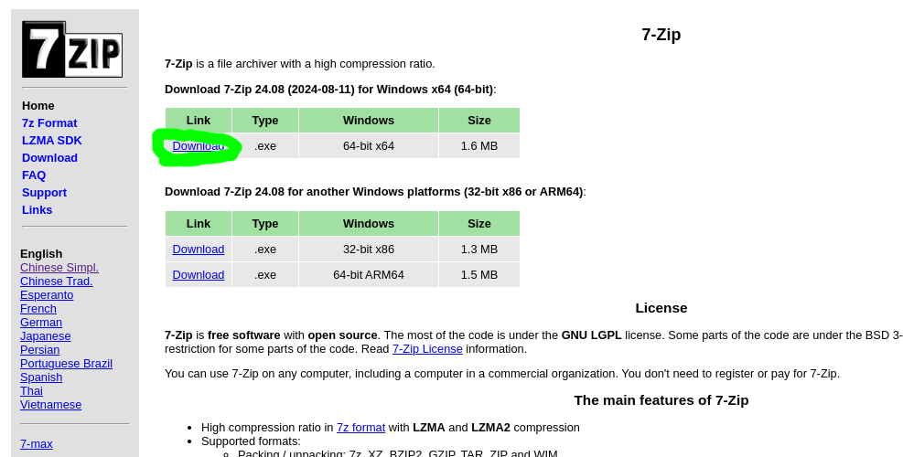

本页仅提供7z的下载方式
7zip是一款开源的压缩工具
这里是官网下载页面：
https://7-zip.org/
https://sparanoid.com/lab/7z/（中文）
说明
点绿色表格下方的Download链接就可以下载了，表格第三列是系统架构选择一般情况只需要下载第一个表格的64位即可。 
下载
这里提供的直接下载链接可能不是最新的，请注意
https://7-zip.org/a/7z2408-x64.exe（官网）
网盘的（下载不了的话用）